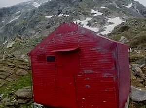
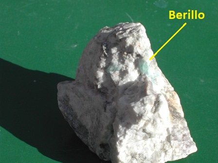
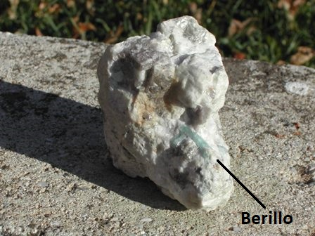

Continua dalla volta scorsa.
Dopo l'illusione di aver alleggerito il sacco cercando di far fuori più panini possibile (Lavoisier insegna che il peso da portare sarebbe stato identico...) ci rimettiamo in moto, il sottoscritto e l'amico Danilo, verso il bivacco Vaninetti, nelle Alpi Retiche occidentali.
La meta ogni tanto intravvista da lontano era un paletto di legno posto su uno sperone che avrebbe (sottolineo "avrebbe") dovuto segnalare l'ubicazione della baracchetta zincata altrimenti poco visibile.
Beh, per farla breve, grazie all'altimetro, alla carta IGM e a litri di sudore alla fine ci siamo arrivati.
Gioia immensa! Eccolo, in una vecchia foto e in una più recente, da quando ha cambiato sia nome che colore:

Dentro, un paio di letti a castello costruiti con semplici assicelle e nient'altro, se non le pareti in lamiera.
Del resto da un bivacco in zona Trubinasca non ci aspettavamo di più e la situazione ci soddisfaceva pienamente.
Il trovarsi lassù, nel silenzio più assoluto, in un posto sperduto, solo cime selvagge all'intorno, per chi ama la montagna e ha qualche traccia di spirito meditativo ha il suo fascino che ripaga di ogni goccia di sudore persa nella salita.
Sistemiamo le nostre cose; inutile dire che in tutto il tragitto, nè ieri nè oggi a parte al rifugio Brasca, abbiamo incontrato anima viva.
Esploriamo intorno, alla ricerca dello scopo della nostra spedizione: le pegmatiti.
Dopo un po' di tempo riusciamo a localizzarle come una importante intrusione filoniana, bella spessa e contorta, nel granito.
Il colore è nettamente più chiaro ed i cristalloni di felspato e quarzo sono evidenti, alternati a belle fogliette lucenti di muscovite; promette bene!
Oggi siamo stanchi ed è poco ma sicuro che non abbiamo nessuna voglia di tirar fuori mazza e martelli e metterci a spaccar pietre; sarà per l'indomani.
Ci mettiamo su una balza a chiacchierare guardando l'infinito, per tirar sera allegramente.
Ad un certo punto io penso che non posso aver tribolato come una bestia per portare il ricetrasmettitore, l'antenna e il palo fin lì, quindi tiro fuori anche questa roba e mi metto a fare quei famosi collegamenti radio modello "Himalaia in miniatura" di cui parlavo.
Bello, fatto anche questo! Ultima occhiata alla Via Lattea lucente come una mezzeria stradale e poi a nanna!
E' ormai quasi buio e fa un freddo boia, quindi giù in branda vestiti di tutto punto, scarponi compresi... e buona notte.
La mattina, mezzi congelati, via di mazza e martello, vedrai che ti scaldi.
Ci aspettavamo berilli non dico ogni martellata, ma almeno uno ogni CENTO martellate!
No, per tirar fuori qualche berillino acquamarina ne abbiamo date MIGLIAIA di martellate... ma li abbiamo trovati, e tanto basta!
Purtroppo abbiamo dovuto constatare con rammarico che nessuna acquamarina, nè mia nè del Danilo, poteva far concorrenza a quelle di Via Montenapo che arrivano da Minas Gerais trasparenti come acqua di fonte, non come le nostre.
Peccato, accontentiamoci di quello che passa il convento!
Ecco i campioni, giudicate voi con indulgenza:


Dopo aver spaccato pietre tutta la mattina come i forzati di Yuma, dopo esserci divertiti per l'esperienza e guardato ancora una volta l'infinito, siamo tornati a Novate Mezzola a prendere la 127 della famiglia media italiana e ce ne siamo tornati a casa più ricchi di quando siam partiti.
Ricchi non di berilli, s'intende...
[E lo zaino? Adesso al posto dei panini c'erano sassi. Maledizione, peggio di ieri!]
2 commenti